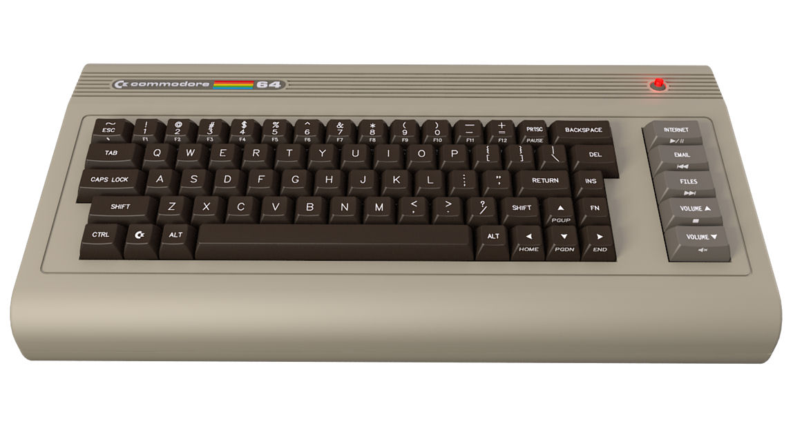
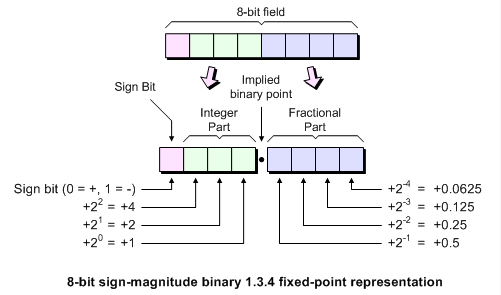
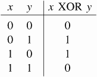
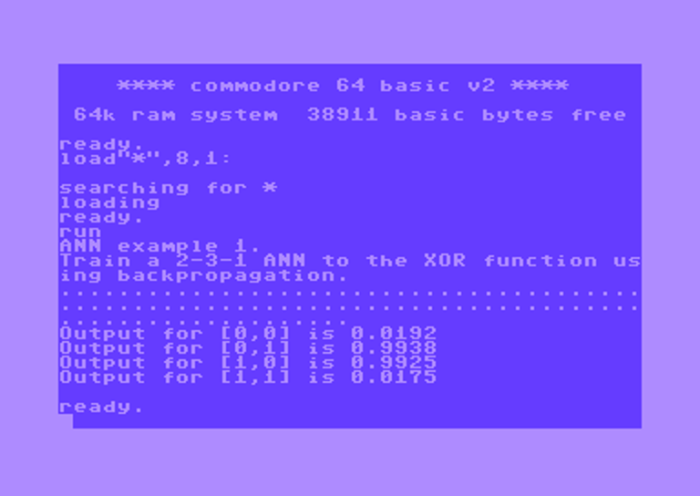

The Commodore 64 was the best selling personal computer in history. It was released in 1982 and at the time was quite an advanced computer. It had the following specs:
- 1 Mhz MOS 6502 8-bit CPU
- 16 Color Graphics powered by the MOS VIC-II
- 3 Channel Sound via the SID
- 64Kb of RAM

Now 64Kb is not much RAM; however, back in 2013 I built a robot that utilized an 8-bit ATmega328P with only 2Kb of RAM (+32Kb of Flash RAM) and managed to squeeze a neural network into those constraints. The ATMega328P was running at 16Mhz instead of 1Mhz of the MOS 6502. Exactly 16x the frequency. How fast will a neural net run and train on the C64?
Just like the ATMega328P, the problem with the MOS 6502 is it does not support floating point, making implementation more difficult. Last time, I used the soft-float library. This time, I take a more efficient approach and implement everything in Fixed Point math.
Lets Fix the Math!

In the example above, we use one byte (8-bit field) to represent the floating point number. The first 4 bits of the field will represent the sign bit with 3 bits representing the integer before the decimal point. A 3 bit integer gives us a range of $\pm7$. The fractional part will allow us a granularity of $\pm0.0625$. Fixed point math is often referred to by the number of bits before and after the decimal. In this case, we have 4.4 fixed math. 4.4 Fixed Math is likely a bit too coarse and does not have enough range in the integer part for the integration and multiplication that occurs at the Activation function in the neural network. How much accuracy will we need for our application? Lets have another look at the Sigmoid function we will be using for activation:
$$g(x) = \frac{1}{1+e^{-x}}$$
 The output of the sigmoid has a range of $y = [0,1]$ a granularity of 256 steps should be a close enough approximation. The integer part will be multiplied by the weights of the Network and integrated at the input of the activation function. We will limit the input $x = [-100,100]$. This means we need 7 bits plus a sign bit for a total of 8 bits for the integer part. Two bytes (8.8 fixed math) should suffice.
The output of the sigmoid has a range of $y = [0,1]$ a granularity of 256 steps should be a close enough approximation. The integer part will be multiplied by the weights of the Network and integrated at the input of the activation function. We will limit the input $x = [-100,100]$. This means we need 7 bits plus a sign bit for a total of 8 bits for the integer part. Two bytes (8.8 fixed math) should suffice.
Bringing things together
Now that we've decided to utilized Fixed Point math, we need to decide how to go about implementing the code. Originally, I planned to write everything in 6502 Assembly (which is how I did it back when I was a kid and had my C64). 6502 Assembly is not too difficult if you've ever worked with the Motorola 6800 series, it's very similar. Here's a very simple example branching in Assembly:
;This routine stores the contents of the accumulator into location
;$30, $31, or $32, depending upon whether the accumulator holds a
;value less than 11, equal to 11, or greater than 11, respectively.
CMP #0A ;Compare accumulator to 11
BCS EQGT3
STA $30 ;Accumulator less than 11
JMP DONE
EQGT BNE GT
STA $31 ;Accumulator equal to 11
JMP DONE
GT STA $32 ;Accumulator greater than 11
DONE .
Writing an entire neural network with gradient descent along with the fixed point library routines in Assembly is going to take some time, in order to speed things along, I decided to go with C. Luckily, in 2016 we've got a nice cross-compiler suite for the MOS 6502 called cc65.
The question one my ask at this point is:
Why bother with custom Fixed Point math routines if we are using C, won't the compiler utilize it's own soft-float routines??
Unfortunately, soft-float is not implemented in the cc65 cross compiler. So we will have to handle floating point manually. I noticed in the contrib directory of cc65, someone had already written a small fixed point library; however, there were two problems with this library:
- It does not support signed math.
- It handles double (ie. 16.16 and 32.8) routines, which are unnecessary for our application and just take up precious memory.
Lets write our own implementation of 8.8 Fixed Math. First we create our type fixed and declare a few helpful constants.
#include <cc65.h>
typedef signed int fixed;
#define FIXEDPT_BITS 8
// Lets define some commonly used numbers
#define fixedZero 0
#define fixedOne ((fixed)((fixed)1 << FIXEDPT_BITS))
#define fixedTwo ((fixed)((fixed)2 << FIXEDPT_BITS))
#define fixedOneHalf (fixedOne >> 1)
We then handle the case of addition and subtraction first:
// A+B
#define fixedAdd(A,B) (A+B)
// A-B
#define fixedSub(A,B) (A-B)
Simple. For multiplication and division we need to be more careful. Since we are doing 16 bit (8.8) arithmetic, we could end up with 32-bit results that we may need to handle. The cc65 suite has some nice helper functions built in:
// A*B
#define fixedMul(A,B) ((fixed)(cc65_imul16x16r32 (A, B) >> FIXEDPT_BITS))
// A/B
#define fixedDiv(A,B) ((fixed)cc65_idiv32by16r16((signed long)A << FIXEDPT_BITS, B))
Finally, we will be utilizing abs(), so lets implement that as well:
// abs(A)
#define fixedAbs(A) ((A) < 0 ? -(A) : (A))
How do we initialize a fixed type? We need some helper functions:
fixed internalFloatStringToFixed(char* value);
#define floatStringToFixed(value) (internalFloatStringToFixed(value))
void internalFixedToFloatString(fixed value, char* result);
#define fixedToFloatString(value, result) { \
internalFixedToFloatString(value, result); \
}
#define bitStringToFixed(value, result) { \
result = strtoul (value, NULL, 2); \
}
#define fixedToBitString(value, result) { \
utoa(value, result, 2); \
}
#define fixedToInt(value) (value >> FIXEDPT_BITS)
#define fixedToChar(value) ((unsigned char)(value >> FIXEDPT_BITS))
#define intToFixed(value) ((fixed)value << FIXEDPT_BITS)
#define charToFixed(value) ((fixed)value << FIXEDPT_BITS)
And there we have it. You can download the complete code for the fixed point math routines here.
Implementing the neural network
Since I've already discussed implementing a neural network in an 8-bit MCU in the past, you can read that article for more details, but briefly we can accelerate things greatly by using an approximation of the Sigmoid function:
$$g(z) = \frac{z/2}{(1+abs(z))+0.5}$$
 Now lets fire it up and have the neural network train on Exclusve Or (XOR):
Now lets fire it up and have the neural network train on Exclusve Or (XOR):

And finally, on the Commodore 64 itself, after 100 iterations of backpropagation (approximately 1 minute of training):
